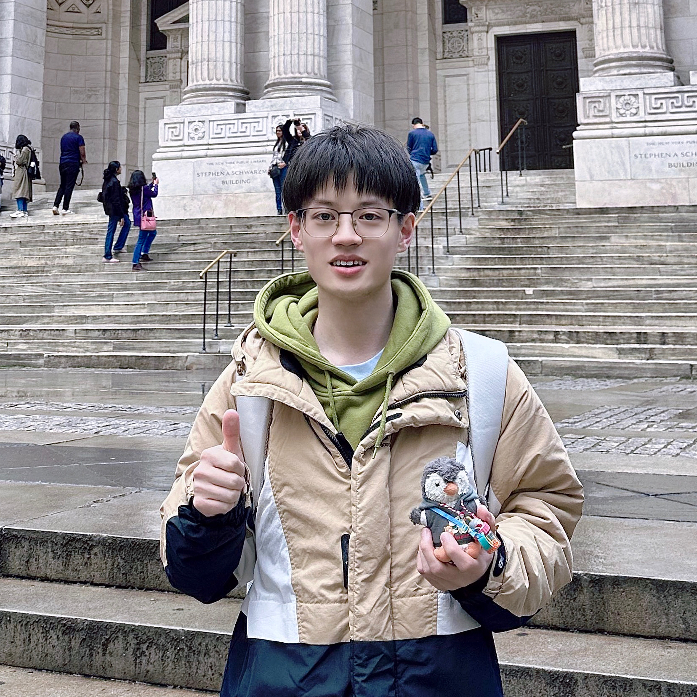

|
Zuntao Liu
Hi, I am a third-year master student at Northeastern University,
advised by Prof. Zheng Fang and in close collaboration with Prof. Chen Wang.
Befor that, I completed my bachelor degree at Northeastern University.
My current research focuses on Multimodal LLMs, Generative Models,
Event-based Vision, and Robotics.
My long-term research goal is to develop intelligent systems with spatial understanding and reasoning of the 3D physical world, ultimately advancing embodied AI in dynamic and interactive environments.
I will graduate in June 2026 and am actively seeking research intern, RA, and PhD opportunities.
Email /
Scholar /
Github
|

|
|
|
Spike-EVPR: Deep Spiking Residual Networks with SNN-Tailored
Representations for Event-Based Visual Place Recognition
Zuntao Liu*,
Yaohui Li*,
Chenming Hu,
Delei Kong,
Junjie Jiang,
Zheng Fang
IEEE Robotics and Automation Letters (RA-L), 2026
|
|
|
Vision-Language Memory for Spatial Reasoning
Zuntao Liu,
Yi Du,
Taimeng Fu,
Shaoshu Su,
Cherie Ho,
Chen Wang
Under Review, 2025
project page
/
arXiv
|
|
|
A Coarse-to-fine Event-based Framework for Camera Pose
Relocalization with Spatio-temporal Retrieval and Refinement Network
Yuhang Song,
Hao Zhuang,
Junjie Jiang,
Zuntao Liu,
Zheng Fang
ICRA, 2025
paper
|
|
|
Nonlinear Motion-Guided and Spatio-Temporal Aware Network for Unsupervised Event-Based Optical Flow
Zuntao Liu,
Hao Zhuang,
Junjie Jiang,
Yuhang Song,
Zheng Fang
ICRA, 2025
project page
/
arXiv
|
|
{kind=link}